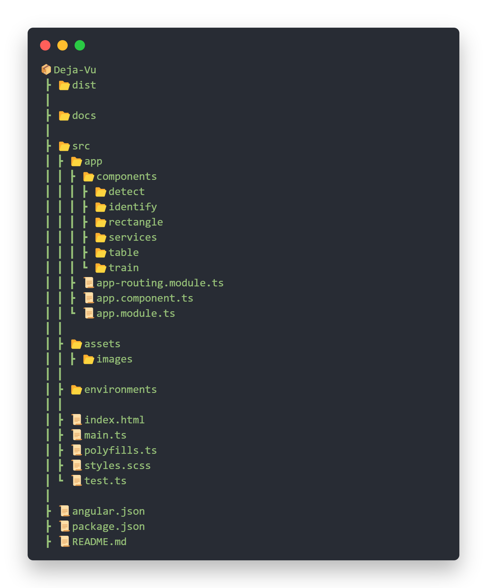

Deja-Vu

Overview
Deja-Vu is a client side application generated with Angular CLI version 13. The core function of this application is to detect, recognize and analyze human faces by uploading images to the web application with the help of Micrsoft's Face API; An AI service that analyzes faces in images. Face API's features include face detection that perceives facial features and attributes—such as a face mask, glasses, or face location—in an image, and identification of a person by a match to your private repository or via photo ID.
Features and Capabilities
The application is capable of following functionalities, with room for improvement:
- Detect: Facial features and attributes of a single person can be detected by uploading an image.
- Train: A Person Group can be creaeted, withinn which, a Person can be created and his/her images can be trained.
- Identify: A person can be identified from a pre-existing and pre-trained Person Group.
For more detail, please refer to Azure Face API documentation. PRs and Contributions are welcome.
Tech Stack
The application is built using following technologies:
Project Structure
A general overlay of Project Structure and it's components and assets.

Development server
Run ng serve for a dev server. Navigate to http://localhost:4200/. The application will automatically reload if you change any of the source files.
Build
Run ng build to build the project. The build artifacts will be stored in the dist/ directory.
Documentation 
Developer Documentation is available through compodoc. The documentation website can be served locally by running npm run compodoc, and is accessible at http://127.0.0.1:8080.
Sample Face Attrbutes Response
[
{
"faceId": "49d55c17-e018-4a42-ba7b-8cbbdfae7c6f",
"faceRectangle": {
"top": 131,
"left": 177,
"width": 162,
"height": 162
},
"faceAttributes": {
"smile": 0,
"headPose": {
"pitch": 0,
"roll": 0.1,
"yaw": -32.9
},
"gender": "female",
"age": 22.9,
"facialHair": {
"moustache": 0,
"beard": 0,
"sideburns": 0
},
"glasses": "NoGlasses",
"emotion": {
"anger": 0,
"contempt": 0,
"disgust": 0,
"fear": 0,
"happiness": 0,
"neutral": 0.986,
"sadness": 0.009,
"surprise": 0.005
},
"blur": {
"blurLevel": "low",
"value": 0.06
},
"exposure": {
"exposureLevel": "goodExposure",
"value": 0.67
},
"noise": {
"noiseLevel": "low",
"value": 0
},
"makeup": {
"eyeMakeup": true,
"lipMakeup": true
},
"accessories": [],
"occlusion": {
"foreheadOccluded": false,
"eyeOccluded": false,
"mouthOccluded": false
},
"hair": {
"bald": 0,
"invisible": false,
"hairColor": [
{
"color": "brown",
"confidence": 1
},
{
"color": "black",
"confidence": 0.87
},
{
"color": "other",
"confidence": 0.51
},
{
"color": "blond",
"confidence": 0.08
},
{
"color": "red",
"confidence": 0.08
},
{
"color": "gray",
"confidence": 0.02
}
]
}
}
}
]